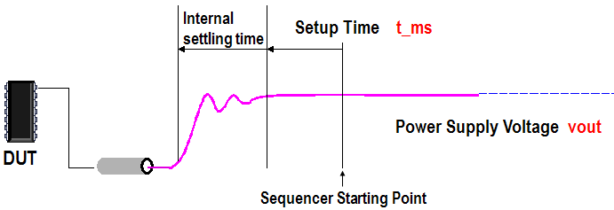
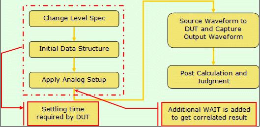
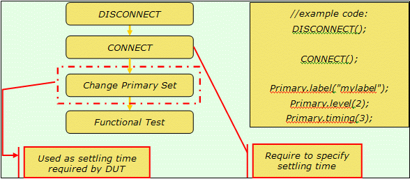
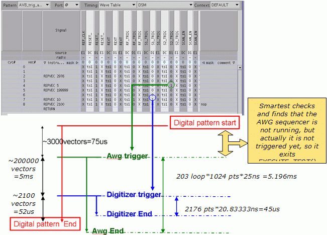

Considerations on Developing Workstation-Independent Test Programs
Jiaming Hu, Installed Base Application Team (IBAT) Verigy
Paper ID 118296
Abstract
Generally, test programs are migrated to a performance-improved workstation to improve the throughput to some extend. However in some rare cases, some workstation relied processes may run at a different speed and have impact on the device status or timing to retrieve the data, which may bring mis-correlation issues. In this paper, we will discuss about several scenarios behind this kind of cases and introduce the best practice to overcome them.
Key Words
workstation, correlation, settling time, throughput, deterministic process
Introduction
This paper discusses several scenarios caused by workstation relied processes with some typical cases and introduce the best practice for those issues.
Deterministic and workstation relied processes
In SmarTest the throughput of some processes is fixed, like the execution of the pattern sequence, AWG and DGT sequence programs. Those sequencer‑controlled processes always run at the defined speed on the hardware, so called deterministic processes.
Meanwhile, in SmarTest there are some processes running on or through workstation that are most likely influenced by the workstation models or configurations. For example,
- Calculating on workstation
- Reading or writing to the file or communication through I/Os
- Initializing the data structure for inputs
- Temporary middle data or result related processing by test method
- Retrieving data from tester
- Downloading the command and related data to the hardware.
What's more, the execution time of those processes also depends on the loading of workstations or other environment elements, so called workstation relied processes.
Consequence of workstation relied processes
Workstation relied processes could run at different speeds on different workstations. As a consequence, it could potentially generate un-correlated results between workstations. The following are two scenarios.
It will impact the status of device for testing
The settling time means the time used for the instrument or device to be in a desired state which is either ready for the measurement, or get prepared for the test execution or result retrieving.
For instrument, we have internal settling time and additional setup time. The internal settling time ensures the related hardware to be in a settled state under certain condition. Below picture gives an example of internal settling time and external setup time specified by t_ms for power supply.

After the internal settling time, the relay for DPS is connected with the power in ON state. The setup time is used to add additional settling time to ensure that the status of the power supply for certain device is achieved.
Example 1
Here's an example of internal settling time for current measurements after measure range changes using the firmware commands on DPS32.
When changing the measure ranges, the measure path has to settle. When using the firmware commands for current measurements, the firmware will wait for the measure range settling. The below table shows the implemented wait times and the maximum allowed DUT capacitor for these ranges.
Measure range |
Firmware wait time |
Maximum DUT capacitor |
|---|---|---|
100uA |
4 ms |
10uF |
2mA |
1.5 ms |
10uF |
50mA |
150 us |
100uF |
1.5A |
50 us |
No limit |
voltage |
50 us |
No limit |
The overall settling time also depends on regulator settling times, especially when the DUT capacitor is higher. If the DUT capacity is larger than the value list on above table, additional setup time is required, for example, more t_ms is needed to be specified.
Besides the DPS, here's a list of related APIs with settling time as the parameter, which can be used to control the additional setup time mainly required by devices under test. For example,
- Measure with PPMU
PPMU_SETTING()/PPMU_RELAY()/PPMU_CLAMP().waitSPMU_PIN_TASK().settlingPMU_IFVM()/PMU_VFIM().settling
- Measure with DPS
DPS_TASK().wait
FLEX_RELAY().wait
For devices, settling time means the time starts from status change to the device being settled. Usually
- We use the parameters of test function or API to specify required setup time for device. For example, the settling time and wait time as list in above APIs.
- But in some cases, user can also use
WAITAPI, or take advantage of calculation or other test to be settling time of certain test, for example, calculation of previous result can be taken as settling time for next test. Below is an example.
Example 2
The block diagram below is an example of one test for an analog device

After changing level, the DUT requires necessary settling time to achieve a stable working status to be able to receive waveform and generate output which is implemented by doing initializing data structure and applying analog setups with test method, then user need take special attention here since this kind of operations is workstation-relied processes, Correlation problem could show up, and even more obviously and frequently if the setup of the test is not self contained.
Moreover, even we set settling/wait time through test function or test method, there could be slight difference on the actual time, usually a bit longer than the specified value. This additional time is called hidden settling time typically in the scale of us. In most cases we Do not need take care of it, but the potential risk is there.
It will impact the timing to retrieve data from device.
No doubt we should make sure of the device in right status when retrieving the result. This is especially important when running the testing for multiple IP codes inside device or setting the measurement with concurrent test. There're also some cases, that time to retrieve the data is affected by workstation. It could happen in case that the measurement is taken after certain calculation or other workstation relied processes, and then we might get wrong result and run into the correlation issue due to the workstation.
Example 3
When we test
frequency of PLLs by ppTIA, the PLLs need time to stabilize and thus a delay time is required in
the PPTIA_TASK to wait the PLLs to be in a stable status when the measurement
after pattern is executed. But a delay is performed by workstation which may vary from
workstation to workstation in a small range caused by workstation overhead. So it may pass on
one workstation but fail on another.
Best practices of workstation related correlation issue
On different workstations, the execution time of same APIs may vary. When programming the settling/wait time, especially for those tests which are extremely sensitive to the timing, we must consider the variation of the settling time which is influenced by the workstation.
Case 1
In this case, changing of primary set is used for settling time required by DUT. When migrating to a faster workstation, the settling time becomes insufficient and the device is not ready for functional test yet, since the code is executing faster. And uncorrelated test result is observed.

Recommendation for case 1
The test is recommended to be self contained
and not be impacted by previous status. The best practice is removing unnecessary
DISCONECT/CONNECT sequence and fixing the missing setups,
which will also avoid unnecessary relay switching. If
DISCONECT/CONNECT is a must here, the settling time for DPS
voltage should be considered and specified with enough t_ms to avoid un-correlation issue,
especially when with large capacities.
Case 2
Polling time during the wait in EXECUTE_TEST()
is also impacted by workstation. In a case of using AWG to send a waveform to the device and
using DGT to capture output waveform from device, WAIT_AWG is taken to wait
both AWG and DGT done before taking further calculation on retrieved data from DGT. As the
following picture describes, AWG sequencer is programmed to run longer than DGT, and the data
should be captured when EXECUTE_TEST() is done, but the result retrieved is
incorrect on another workstation.

The root cause turns out to be that Smartest checks the AWG sequencer and finds
that AWG is not running because it has not been triggered in pattern, and thus the wait in the
EXECUTE_TEST() is done and the captured date which is not ready yet is
processed. Things go well on a slower workstation due to a bit longer time taken to poll the
status of the AWG and get expected result.
Recommendation for case 2
In this
situation, we recommend waiting all AWG, DGT and digital done by TM::WAIT_ALL
and then process the prepared data.
Case 3
The PLLs frequency test by PPTIA may also be impacted by workstation as above example 3 describes. The PLLs need time to stabilize, which can be implemented by a delay time specified in the member function of PPTIA_TASK. The total required time is the set time by pattern execution and the wait time for PLLs to be stable. Since wait time for device to be stable may vary among DUTs, with a marginal setup of delay time, you may get unstable result on a faster workstation.
Recommendation for case 3
Specifying sufficient delay time after necessary correlation work is required to
achieve stable result. In special cases, we also need to take care that when a larger delay time
is specified, pattern must be long enough to keep running when measuring by ppTIA. Remember that
a good practice for PLLs test is using KEEP-PLL-ALIVE to avoid multiple waits
for different tests.
Case 4
An I2C test may be implemented as below 3 ways:
- A: Testsuite A: <set address A> <write data A1> <write data A2> <stop A>
- B: Testsuite B1: <set address B1> <write data B1> <stop B1>
Testsuite B2: <set address B2> <write data B2> <stop B2>
- C: Testsuite C: <set address C> <write data C1> <some user codes> <set address C2> <write dataC2> <stop C>
In way A, data may be not written to device yet without handling acknowledge, start and stop correctly. Also in way B, inadequate stop cycles between data accesses may lead to failure in writing since device is still in the transmission frame and will not accept a new one before it is stopped correctly. Similar issue could happen in way C. It may pass on some workstation but cause mis-correlation on a faster workstation, since the execution time of the user codes may vary.
Recommendation for case 4
A recommended way is to guarantee enough required stop cycles and make sure all patterns are stable even if they are only writing to the device without any compare states.
Besides, download and upload time also depends on the workstation performance. User must ensure that the data is ready and uploaded completely, before subsequent data processing. For those workstation relied processes, multisite, diag 2-command, engineering or production mode, manual mode will also have impact on them. As an example, it is common that we find different result in engineering mode from production mode. When encountering this kind of uncorrelated behavior, these workstation relied processes need to be carefully checked.
Conclusion
In SmarTest there are some processes running on workstation like calculating, data retrieving, downloading, may be influenced by the workstation. As a consequence, execution time of these processes varies among different workstations and results in some unexpected correlation issues, especially in 2 scenarios:
- Impact the status of device which is sensitive to settling time
- Impact the time to retrieve data from device and lead to uncorrelated result
User need make sure that device is settled when using this kind of processes as settling time and take special care when the time to measure or retrieve data depends on the workstation relied processes. Note that there may be a compromise between:
- Making the test suites self contained and therefore spending settling times for the measurements where required.
- Optimizing for speed and hiding settling times where ever possible and therefore losing the independence to different workstations.
References
Online Documentation, https://www.advantest.com/V93000/help/